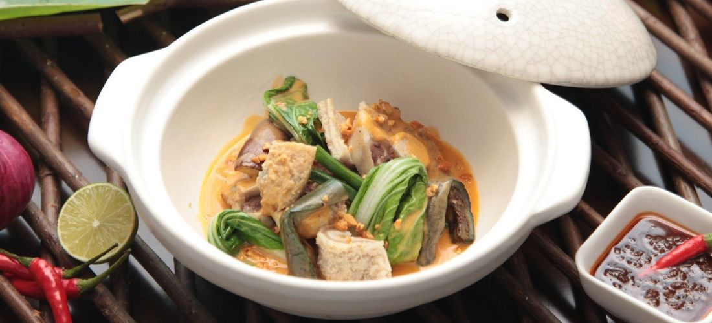

Kare-Kare Recipe
This Kare-Kare is one of the traditional dishes we cook back in the Philippines. Always the best for fiestas and holidays! Serve over hot cooked rice.
Ingredients
- 1 1/2 pounds beef oxtail, cut into pieces
- 1 larger onion, quartered
- 2 cloves garlic chopped
- 1 teaspoon salt
- 1/2 teaspoon ground black pepper, or to taste
- 1 large eggplant, cut into 2-inch chucks
- 1/2 head bok choy, cut into 1-inch pieces
- 1/2 pound fresh green beans, trimmed and snapped into 2-inch pieces
- 1/4 cup peanut butter, or as needed to thicken sauce
Instructions
- Step 1
- Step 2
- Step 3
- Fill a large saucepan with water; add oxtail, onion, garlic, salt, and pepper. Bring to a boil, and simmer for 2 hours over medium-low heat, skimming off the foam occasionally, until oxtail meat is very tender and broth is reduced to 3 cups.
- Stir in eggplant, bok choy, and green beans; simmer for about 20 minutes, until vegetables are tender.
- Just before serving, place peanut butter in a small bowl and thin with 1 or 2 tablespoons of broth. Stir until smooth and add to stew.
Note: Oxtails produce a lot of fat as they cook; strain off excess grease from the stew before serving.